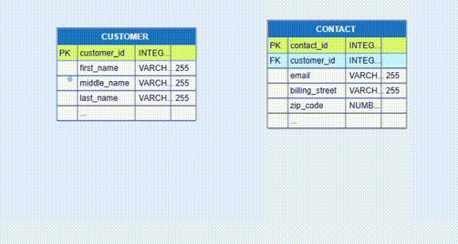

The relationships of relational databases are determined by the primary and foreign
keys.
A primary key is a column (PK) or a group of columns (CPK - composite primary key)
that ensure unique row identification in the database table. The primary keys values
cannot be duplicate or null. If a primary key contains multiple columns, the combination of values
in each record should be unique for it to be valid. A table can have only one primary key.
A foreign key is a column (FK) or a group of columns (CFK) that together with a
primary key of another table represent a reference between the two tables. In other words, the foreign
key in one table is said to have a reference to a primary key in another table. There could be multiple
foreign keys from different tables referencing the same primary key.
As mentioned earlier, the rows in the diagram table node correspond to the database table
columns. The columns in the diagram node show the property values of each database column.
In the picture below, the first record field in the CUSTOMER table, named customer_id,
is the primary key of this database
table. It is tagged with PK in the first column of the node.
The first record field in the CONTACT table, named contact_id,
is the primary key of this database
table. It is tagged with PK in the first column of the node.
The second record field in the CONTACT table, named customer_id, is
the foreign key of this database
table. It is tagged with FK in the first column of the node.
The popup handles on the PK row of one node and on the FK row of another node offer the
choice to create a link between the two diagram nodes by dragging one of them to the other.
This link is an essential
feature of the relational databases. It establishes and ensures the referential integrity between the
table with referencing column and the table with referenced column.
The small vertical bars at the both ends of the link below show the particular cardinalities.
They define the numerical relationship between connected entities. In the example below
each customer can have only one contact associated with him and each contact corresponds to only
one specific customer. This is one-to-one relationship.

Adding cardinalities to diagrams has not any functional implications. The crow's foot symbols are rotated correspondongly. All types of cardinalities are listed in the dialog: